Каждый знак — это обобщённый портрет по положению Солнца в момент рождения. Ниже — 12 карточек: нажми на знак, чтобы прочитать про него.
Колесо Зодиака — интерактивная система знаков и старших арканов школы →Овен
Импульс, смелость, начало
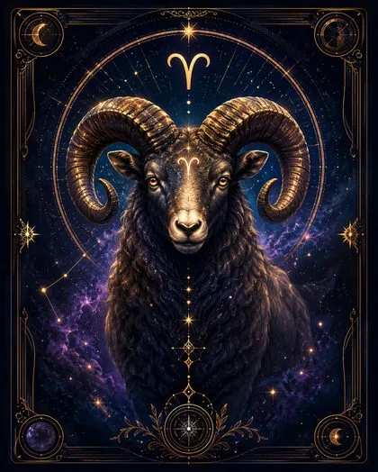
Телец
Стабильность, опора, форма
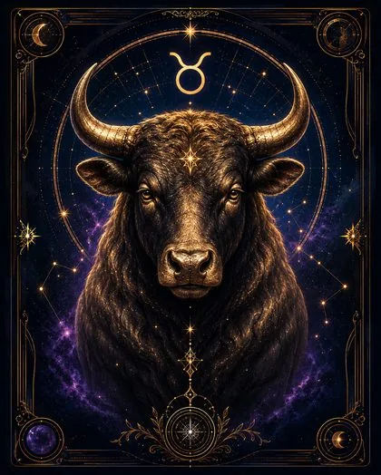
Близнецы
Контакт, движение, информация
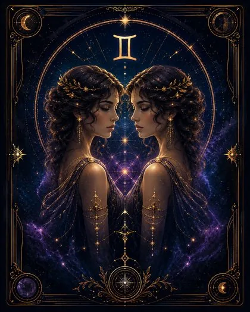
Рак
Чувства, дом, внутренняя глубина
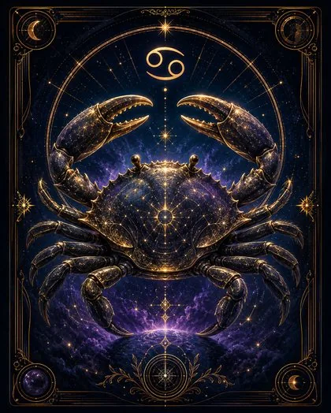
Лев
Самовыражение, сила, достоинство
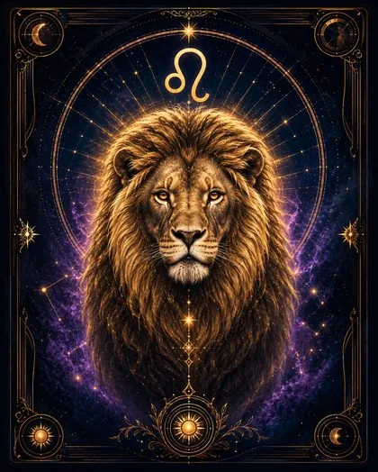
Дева
Порядок, точность, практичность
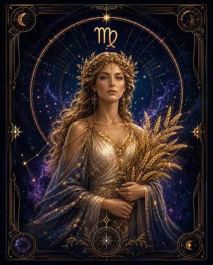
Весы
Баланс, партнёрство, гармония
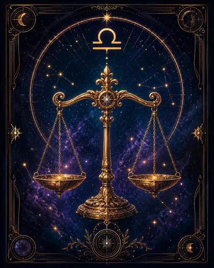
Скорпион
Глубина, сила, трансформация
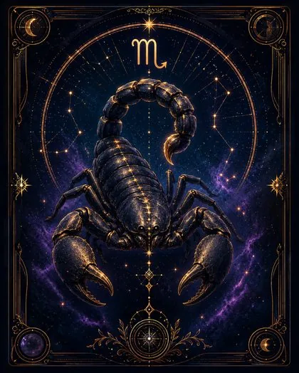
Стрелец
Смысл, путь, расширение горизонтов
Козерог
Структура, цель, достижение
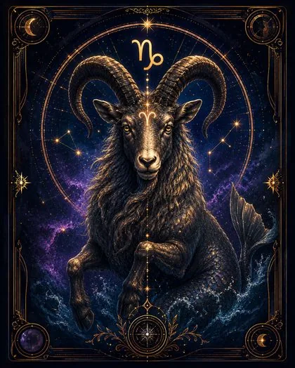
Водолей
Свобода, идеи, будущее
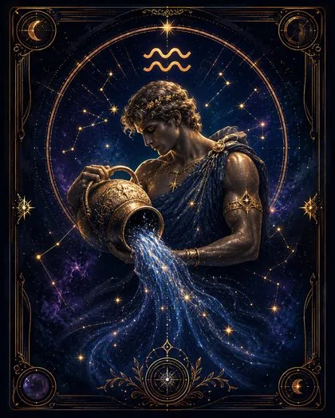
Рыбы
Интуиция, сострадание, тайна
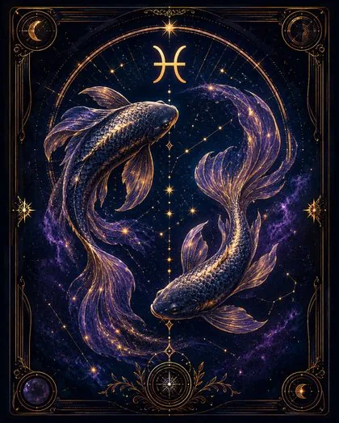
Это обобщённое описание солнечного знака, а не полный портрет человека. В реальной натальной карте характер зависит не только от Солнца, но и от других факторов.